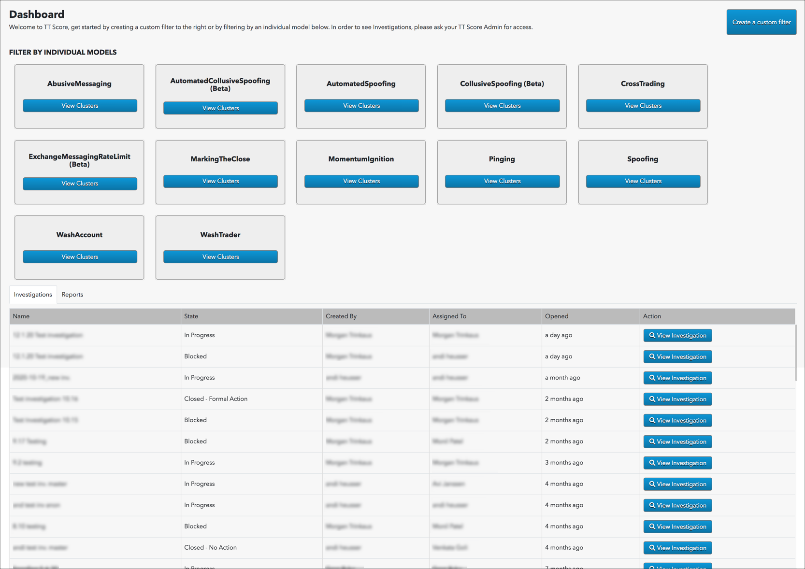

TT Score provides a comprehensive surveillance and case management toolset for analyizing and reporting on trading activity. You conduct reviews in TT Score by:
Selecting data
To define and organize dataset you would like to review, TT Score provides tools for filtering and grouping your data.
- Date picker to define which daily audit logs to include.
- Filter dropdowns and checkboxes
- (Optional) For cluster group views, use the Group by: dropdown to group clusters by trader, accout or instrument.
Selected filters are applied to the data when you click the Apply Filters button.
Note: Selected data is best reviewed by focusing on one problematic trading model at a time. This can be done using the filter checkboxes in the MODELS section. After you have completed a review of clusters associated with an individual model, you filter down to the next model in the list and repeate the review process.
For more information, consult Selecting Data article.
Analyzing trading activity using data visualizations
Once your data is selected, you can use TT Score's data visulaizations to identify clusters of problematic trading activity.
TT Sore provides the ability to review clusters at various levels of granularity: the cluster group level, the cluster list level, and the individual cluster level.
-
Identify concentrations of problematic activity using the following views:
-
Use the Cluster List to identify and analyze individual clusters to determine whether further action is needed.

-
Color-coded risk score to give guidelines on the potential risk for each cluster
-
Name of the problematic trading model for each cluster
-
Option to inspect the cluster in more detail
-
Use the Cluster Scorecard to review each individual cluster to determine whether the trading activity could be problematic or whether it is reasonable for the circumstances.

- Cluster statistics and metrics for the trading activity analyzed within the cluster.
- Orders and fills graph of the trading activity and volume of contracts traded within the cluster over a period of time.
- Market replay for viewing a frame-by-frame replay of the trading activity overlaid with market data in a market ladder.
- Actual order actions from the audit trail with some minor normalization of things like Order Type, Side and Order Action.
For more information, see the Analyzing trading activity using data visualizations article.
Recording reviews and opening investigations
As you complete your analysis, you can record notes and dispositions. TT Score provides the ability to record these reviews at the cluster group level as well as the individual cluster level.
Reviews that require further action can be added to investigations.
Recording Reviews
You record your notes and dispositions using the Review Sidebar:
- To record a review at the cluster group level, click the Review/Investigate button in the Actions column on in the Daily Cluster Group view.
- To record a review for an individual cluster, click the Review Cluster button in the Cluster Scorecard.
The Review Sidebar will then appear on the left-hand side of your screen

The Review Sidebar is used to:
- Enter review notes.
- View the review history.
- Add the cluster or cluster group to an existing investigation.
- Create a new investigation to which to add the cluster or cluster group.
Creating and managing investigations
Once the review of a cluster or cluster group is complete, they can be added to an investgation for further review or action.
As noted above, clusters and cluster groups can be added to an existing investigation from within the Review Sidebar. You can also create new investigations within the Review Sidebar.
A list of open investigations is displayed in the TT Score Dashboard.

For more information, see the Recording reviews and opening investigations article.